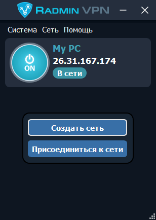

Radmin VPN – бесплатная и простая в использовании программа для создания виртуальных локальных сетей. Программа позволяет пользователям устанавливать безопасное соединение между компьютерами находящимися за файрволами.
Radmin VPN - это полностью бесплатное ПО, без рекламы и каких-либо платных фич. Мы зарабатываем деньги на другом коммерческом продукте
Мы не отслеживаем, не собираем и не продаем ваши личные данные.
Создает для вас безопасный туннель для передачи трафика. Надежное cквозное шифрование (AES-256) обеспечивает безопасность подключения.Подробнее
Radmin VPN может автоматически устанавливать свои обновления.
Прост в использовании и установке как для ИТ-профессионалов, так и для обычных пользователей.